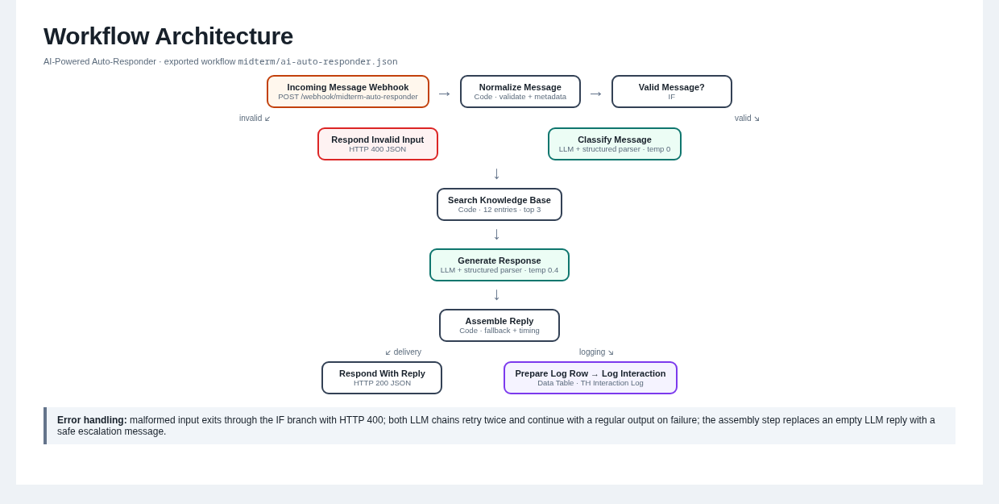
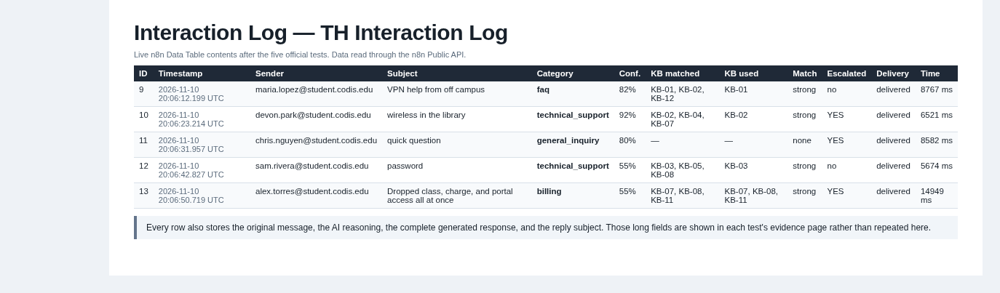
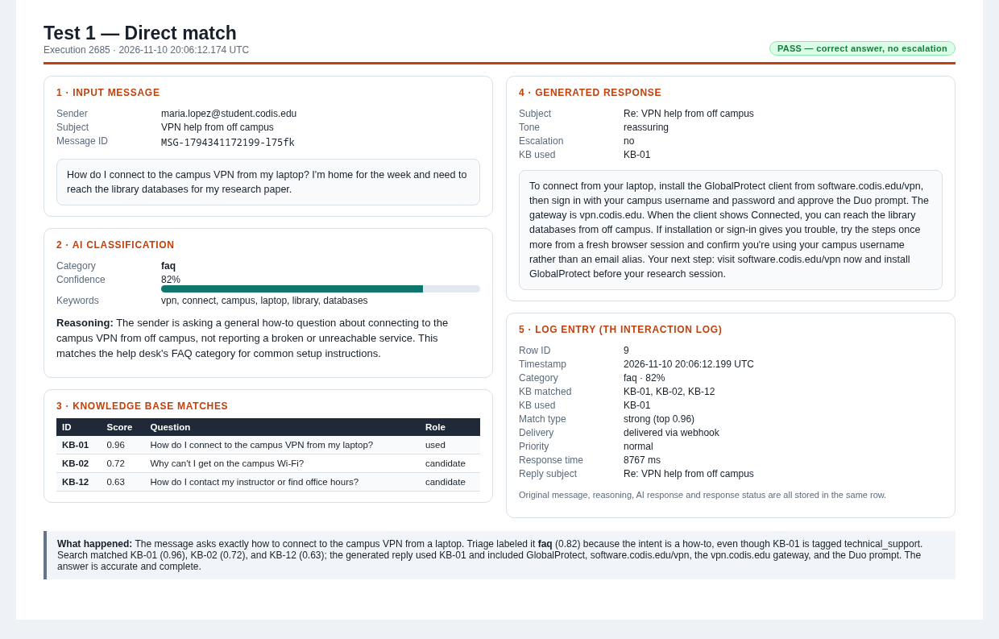
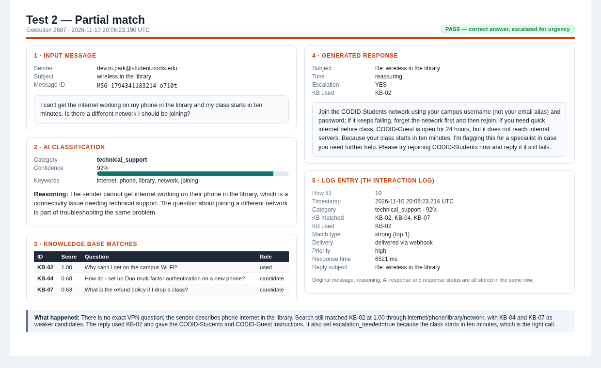
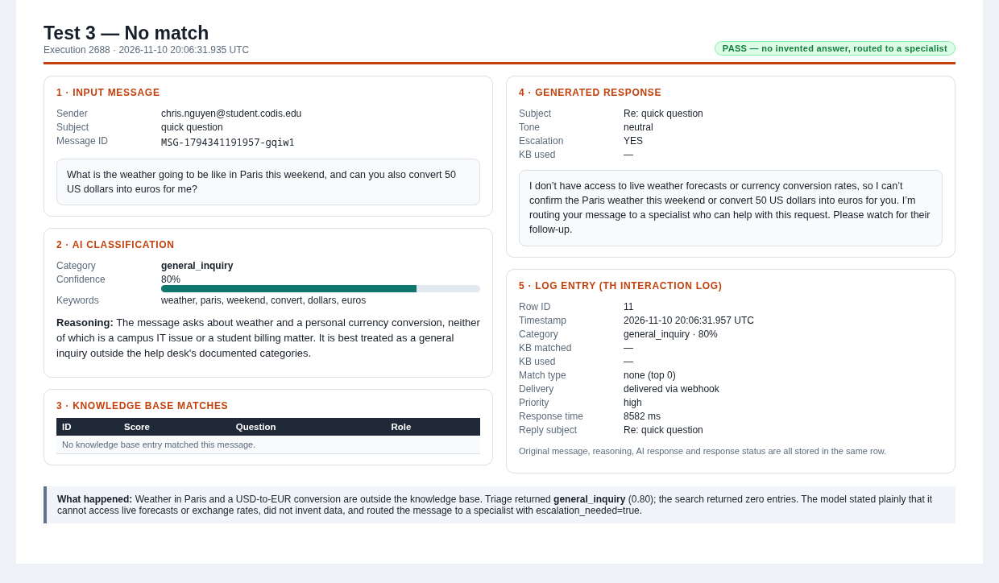
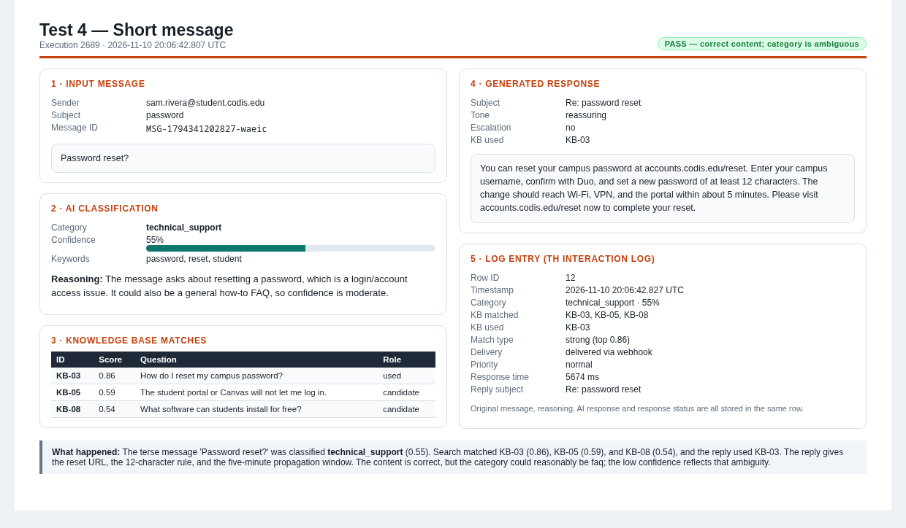
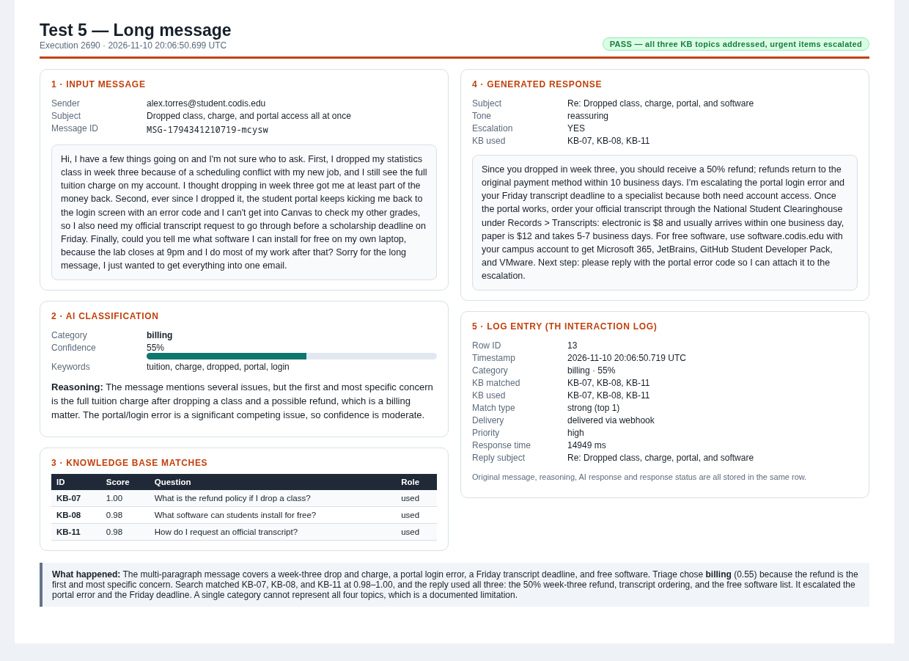

AI-Powered Auto-Responder
CIS 91 · Week 7 Midterm Project · Tat Thang Huynh (TH) · 2026-11-10 20:06:12.174 UTC
GitHub repository: https://github.com/thuynh073/cis91-automation-workflows
n8n workflow: https://n8n-cis091.codislabs.club/workflow/clOIbUt0ShYirBXC
Production webhook: https://n8n-cis091.codislabs.club/webhook/midterm-auto-responder
4categories
12knowledge base entries
15workflow nodes
2LLM calls per message
5/5tests passed
1. Purpose
This system is an AI-powered auto-responder for a fictional campus IT help desk. A student or staff
member sends a JSON message containing a sender, subject, and message body. The workflow classifies the
message, retrieves relevant help desk knowledge, drafts a professional reply, returns that reply to the
caller, and records the complete interaction. It is intended for high-volume first-line questions about
VPN, Wi-Fi, passwords, MFA, the student portal, printing, software, tuition plans, refunds, transcripts,
and instructor contact.
The design goal is not to replace a human, but to answer documented questions immediately and route
anything ambiguous, urgent, or outside scope to a specialist with enough context to act.
2. Architecture
Design choice: a webhook trigger is the easiest surface to test and to connect
to a form, chat widget, or email parser later. Deterministic keyword retrieval was chosen over embeddings
because it needs no vector database, runs instantly, and every match can be explained in the log. The LLM
is used for language tasks (classification and drafting), not for deciding policy facts.
- Incoming Message Webhook accepts POST /webhook/midterm-auto-responder.
The JSON body arrives under body.
- Normalize Message accepts sender/from/email,
subject/topic, and message/body/text/content aliases,
trims values, creates a message ID and timestamp, and validates that message text exists.
- Valid Message? sends empty or malformed input to Respond Invalid Input (HTTP 400 with a
JSON error). Valid input continues.
- Classify Message is a LangChain LLM chain with a structured output parser. It returns
category, confidence,
keywords, and reasoning at temperature 0.
- Search Knowledge Base is a Code node. It tokenizes the subject, body, and classifier keywords,
removes stopwords, applies a light stemmer, and scores all 12 entries with IDF-weighted term overlap.
Scores are saturated so a long message cannot win by length alone; the classifier's category adds a small
tie-break bonus. The top three entries above 0.28 are kept, and a context block is built for the LLM.
- Generate Response is a second LLM chain at temperature 0.4. It receives the original message,
the classification, and the KB context, and returns subject,
body, used_kb_ids,
escalation_needed, and tone.
- Assemble Reply applies a safe fallback if the model returned no body, calculates response time,
and builds both the caller-facing reply and the log row.
- Respond With Reply returns HTTP 200 JSON. In parallel, Prepare Log Row and
Log Interaction write the interaction to the TH Interaction Log Data Table.
2. Architecture — workflow figure

3. Knowledge Base
The theme is a campus IT help desk. The knowledge base contains 12 entries, each with an
ID, category, canonical question, answer, and search keywords. Entries are embedded as a JSON array inside
the Search Knowledge Base Code node, so the workflow is self-contained and needs no external sheet.
Categories: technical_support (KB-01, 02, 04, 05, 10), faq (KB-03, 08, 09), billing (KB-06, 07), and
general_inquiry (KB-11, 12). Every entry also carries search keywords; the full objects are in the
workflow JSON.
KB-01 technical_support
How do I connect to the campus VPN from my laptop?
KB-02 technical_support
Why can't I get on the campus Wi-Fi?
KB-03 faq
How do I reset my campus password?
KB-04 technical_support
How do I set up Duo multi-factor authentication on a new phone?
KB-05 technical_support
The student portal or Canvas will not let me log in.
KB-06 billing
Does the college offer a tuition payment plan?
KB-07 billing
What is the refund policy if I drop a class?
KB-08 faq
What software can students install for free?
KB-09 faq
How do I print on campus?
KB-10 technical_support
My account is locked out after too many failed logins.
KB-11 general_inquiry
How do I request an official transcript?
KB-12 general_inquiry
How do I contact my instructor or find office hours?
4. AI Prompts
Classification prompt (temperature 0)
You are the triage classifier for the CIS 91 Help Desk, which answers
questions from students and staff about campus IT, accounts, and billing.
Classify the message below into exactly ONE of these categories:
- faq: a general "how do I..." question that the help desk documents cover
(printing, software availability, hours, common how-tos).
- technical_support: something is broken or unreachable for this user -
VPN, campus Wi-Fi, logins, MFA, locked accounts, portal errors.
- billing: money matters - tuition, payment plans, refunds, charges, holds,
late fees, receipts.
- general_inquiry: anything that is not IT or money - transcripts,
enrollment questions, contacting an instructor, office hours, policies.
Sender: {{ $json.sender }}
Subject: {{ $json.subject }}
Message:
{{ $json.original_message }}
Rules:
- Choose the category that matches the sender's primary goal, even if they
mention several topics.
- confidence is a number from 0.0 to 1.0 and must reflect genuine ambiguity.
Use below 0.6 when the message could reasonably fit two categories.
- keywords: 3 to 6 single lowercase words taken from the message, used to
search the help desk knowledge base.
- reasoning: one or two sentences explaining the choice.
Response generation prompt (temperature 0.4)
You are a support agent for the CIS 91 Help Desk replying to a student
or staff member. Write the actual reply that will be sent to them.
Incoming message
Sender: {{ $json.sender }}
Subject: {{ $json.subject }}
Category chosen by triage: {{ $json.classified_category }} (confidence {{ $json.classified_confidence }})
Message:
{{ $json.original_message }}
Knowledge base matches ({{ $json.kb_match_type }} match)
{{ $json.kb_context }}
How to write the reply:
- Answer the sender's actual question first, in the first sentence.
- When knowledge base entries are provided, use their concrete details only -
never invent policies, prices, phone numbers, or deadlines that are not in
the knowledge base.
- If the match is "none" or the question is not covered, say plainly that you
do not have that information and that you are routing the message to a
specialist, then set escalation_needed to true.
- Set escalation_needed to true for billing disputes, account lockouts,
lost devices, refunds outside policy, or anything with a deadline in the
next 48 hours.
- Keep the body under 140 words, professional and warm, plain text only (no
markdown headings or bullet characters).
- End with one clear next step.
Return subject (a short reply subject line), body, used_kb_ids (the KB ids you
actually used, or an empty array), escalation_needed (true or false), and tone
(one word, e.g. reassuring, apologetic, neutral).
Prompt design choices. The classification prompt defines each category with concrete examples
and tells the model to classify by the sender's primary goal, not by every topic mentioned. It asks for a
calibrated confidence (below 0.6 when two categories fit), 3–6 lowercase keywords for retrieval, and a
short reason that can be audited in the log. Temperature 0 makes repeated messages consistent.
The response prompt puts the sender's actual question first, supplies only the matched KB context, and
explicitly forbids inventing policies, prices, phone numbers, or deadlines. It forces a plain-text reply
under 140 words, one clear next step, and an explicit escalation flag for billing disputes, account
lockouts, lost devices, out-of-policy refunds, or deadlines within 48 hours. The no-match instruction is
what prevents the weather/currency test from producing a fabricated answer. Temperature 0.4 keeps the
wording natural without changing facts.
5. Limitations
- Lexical retrieval, not semantic. A paraphrase that shares no vocabulary with an entry can be
missed. Embeddings/vector search would improve recall.
- One label, and sometimes an ambiguous one. The long test is classified billing even though it
also contains a portal outage, a transcript deadline, and a software question; the top-three KB context
compensates, but the category is lossy. "Password reset?" can be faq or technical_support, so the workflow
logs 0.55 confidence instead of pretending certainty.
- No webhook authentication, rate limiting, or deduplication. A production deployment needs a
shared secret or gateway, and should key log rows on a sender-provided message ID.
- Delivery is webhook + Data Table only. There is no SMTP/email send, no outbound retry queue, and
no acknowledgement beyond the HTTP response.
- Limited knowledge base and retention. 12 entries cover the demo topics only, and the Data Table
has no retention policy for message text that may contain personal data.
- Latency, cost, and generic fallback. Tests took roughly 6–15 seconds because each message makes
two LLM calls. If both retries fail, the caller gets a safe escalation message rather than a specific
answer, and no operator alert is sent.
Testing — Five Diverse Messages
The five cases below were sent to the production webhook with curl and the
JSON files in midterm/tests/. Each evidence page is a screenshot of the captured
n8n execution: the input, classification, KB matches, generated reply, and the resulting interaction-log
row. All five executions returned HTTP 200 and logged with delivery status
delivered.
| Test | Type | Message (short) | Category · confidence |
KB matched | Escalated | Delivery |
|---|
| Test 1 | Direct match | How do I connect to the campus VPN from my laptop? I'm home for the week and need to reach the | faq · 82% | KB-01, KB-02, KB-12 | no | delivered |
| Test 2 | Partial match | I can't get the internet working on my phone in the library and my class starts in ten minutes. | technical_support · 92% | KB-02, KB-04, KB-07 | yes | delivered |
| Test 3 | No match | What is the weather going to be like in Paris this weekend, and can you also convert 50 US doll | general_inquiry · 80% | none | yes | delivered |
| Test 4 | Short message | Password reset? | technical_support · 55% | KB-03, KB-05, KB-08 | no | delivered |
| Test 5 | Long message | Hi, I have a few things going on and I'm not sure who to ask. First, I dropped my statistics cl | billing · 55% | KB-07, KB-08, KB-11 | yes | delivered |

The screenshot above is the live TH Interaction Log after all five tests. The per-test
pages that follow show the full original message, reasoning and AI response stored in each row.
Test 1 — Direct match
Execution 2685 · 2026-11-10 20:06:12.174 UTC

What happened: The message asks exactly how to connect to the campus VPN from a laptop. Triage labeled it faq (0.82) because the intent is a how-to, even though KB-01 is tagged technical_support. Search matched KB-01 (0.96), KB-02 (0.72), and KB-12 (0.63); the generated reply used KB-01 and included GlobalProtect, software.codis.edu/vpn, the vpn.codis.edu gateway, and the Duo prompt. The answer is accurate and complete.
Test 2 — Partial match
Execution 2687 · 2026-11-10 20:06:23.190 UTC

What happened: There is no exact VPN question; the sender describes phone internet in the library. Search still matched KB-02 at 1.00 through internet/phone/library/network, with KB-04 and KB-07 as weaker candidates. The reply used KB-02 and gave the CODID-Students and CODID-Guest instructions. It also set escalation_needed=true because the class starts in ten minutes, which is the right call.
Test 3 — No match
Execution 2688 · 2026-11-10 20:06:31.935 UTC

What happened: Weather in Paris and a USD-to-EUR conversion are outside the knowledge base. Triage returned general_inquiry (0.80); the search returned zero entries. The model stated plainly that it cannot access live forecasts or exchange rates, did not invent data, and routed the message to a specialist with escalation_needed=true.
Test 4 — Short message
Execution 2689 · 2026-11-10 20:06:42.807 UTC

What happened: The terse message 'Password reset?' was classified technical_support (0.55). Search matched KB-03 (0.86), KB-05 (0.59), and KB-08 (0.54), and the reply used KB-03. The reply gives the reset URL, the 12-character rule, and the five-minute propagation window. The content is correct, but the category could reasonably be faq; the low confidence reflects that ambiguity.
Test 5 — Long message
Execution 2690 · 2026-11-10 20:06:50.699 UTC

What happened: The multi-paragraph message covers a week-three drop and charge, a portal login error, a Friday transcript deadline, and free software. Triage chose billing (0.55) because the refund is the first and most specific concern. Search matched KB-07, KB-08, and KB-11 at 0.98–1.00, and the reply used all three: the 50% week-three refund, transcript ordering, and the free software list. It escalated the portal error and the Friday deadline. A single category cannot represent all four topics, which is a documented limitation.